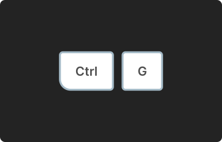
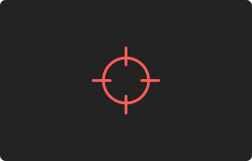

Oh no, There's a missile attack on the ship.

The controller's job is to group the same entities in the map, to
have a clear view.
 The controller groups again and again and again and again...
The controller groups again and again and again and again...

Now that the map is clear, other position holders can intercept the
threat.